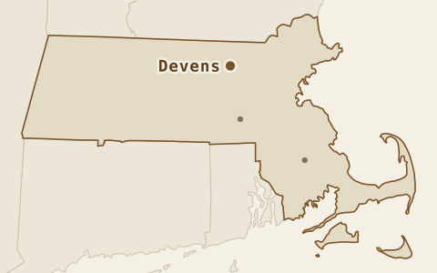
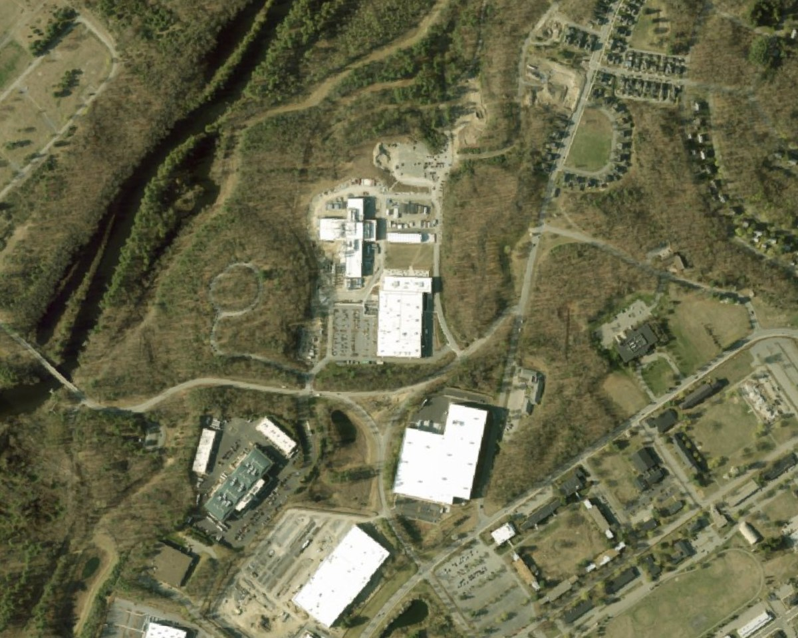
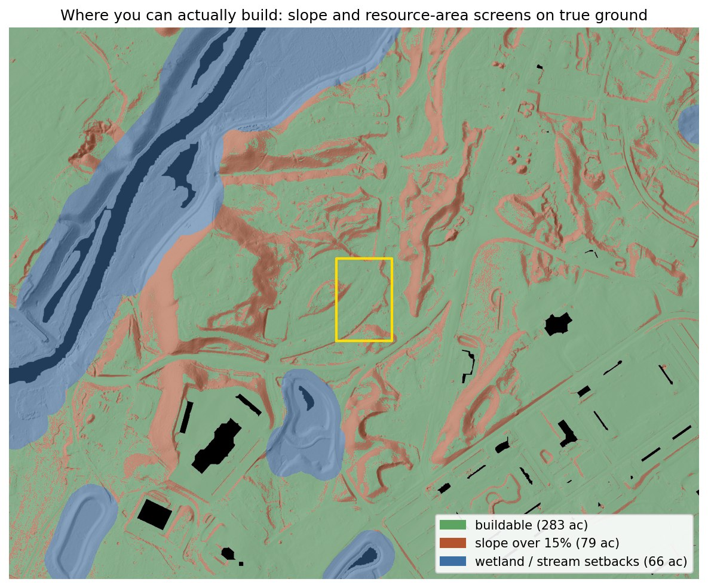
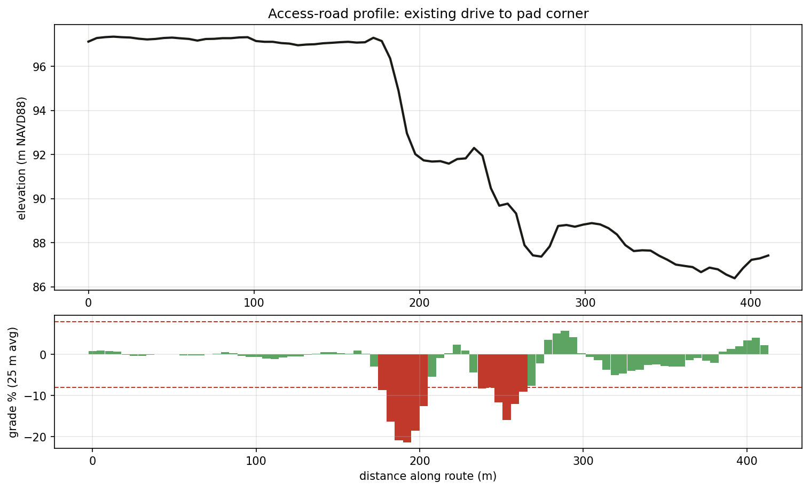
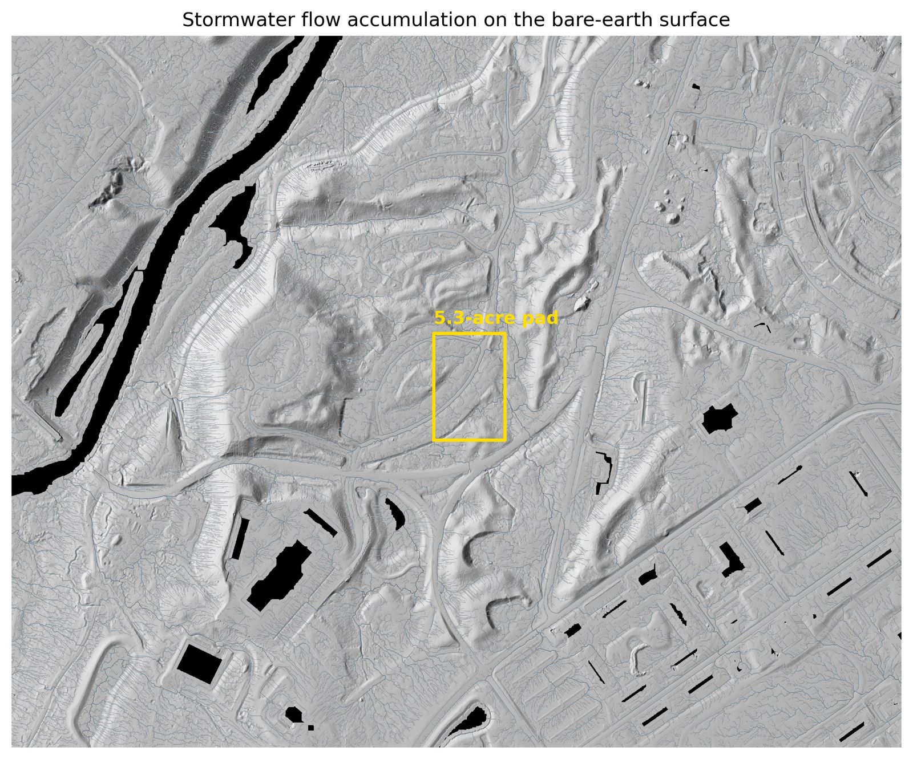

Lidar saw this land
before anyone broke ground.
In spring 2021 a public lidar flight passed over 5.3 acres of forest in Devens, and two years later Commonwealth Fusion Systems finished a campus on that exact ground. That makes this a rare thing to have, a terrain model of ground that was built on immediately afterwards, which is the setup you would want in order to test a screening estimate against a finished project.

Drag the line
Left of the line is the treetop surface, roughly what a camera reconstructs when leaves hide the ground. Right of it is the bare earth, rebuilt from the laser pulses that found gaps in the canopy. Both come from the same flight, the same week and the same points, and the yellow rectangle marks the building pad measured below.


The data landed 17 days after the project was announced
Commonwealth Fusion Systems announced its 47-acre Devens campus on March 3, 2021, and the state lidar was flown between March 20 and April 24, so the point cloud catches the parcel in its last weeks as forest. The pad measured below is where their largest building actually went, which means this is the analysis that could have been on the table before a single tree came down.

Putting a number on the gap
One pad, three surfaces
The pad is 5.3 acres, matching the footprint of the building that now stands there. It was 65% forest when the lidar was flown, with trees up to 23 m. Grading it to a level 86.63 m requires:
| Surface used for the estimate | Cut | Fill | Total moved | @ $20 / yd³ |
|---|---|---|---|---|
| Lidar bare earth | 12,255 | 12,278 | 24,532 yd³ | $0.49M |
| Treetop surface (canopy counted as ground) | 304,247 | 2,443 | 306,690 yd³ | $6.13M |
| 2011 state DEM (last free data before 2021) | 12,190 | 12,323 | 24,513 yd³ | $0.49M |
| Canopy error hiding in the treetop surface | 282,158 yd³ | ≈ $5.64M | ||
A uniform ±10 cm vertical shift changes the modeled volume by ±2,827 yd³, or about ±$57k. That is a data-accuracy sensitivity rather than a construction contingency, since design, soils, rock and field conditions can move it much further.
To be fair about both comparisons, nobody would bid $6M off a treetop surface. The real problem is that on wooded land a camera-only model may not give a reliable bare-earth surface at all, so the estimate has to come from another source, a site walk or judgment. The 2011 DEM only stayed close here because this parcel sat untouched, and elsewhere in the same study area the ground moved as much as 7 m over that decade. There is no way to know which kind of parcel you have without measuring it again.

More answers from the same flight
The earthwork number is the headline, but one dataset answers a stack of other early-stage questions:





What this means for the deal
| Screening item | Estimate |
|---|---|
| Earthwork, graded to balance | $0.49M ± $57k |
| Clearing, 3.5 forested acres | $10–21k |
| Access | direct route crosses a 21% bank, so contour the drive or regrade |
| Terrain-screening subtotal: modeled earthwork + clearing only | ≈ $0.51M + unresolved access work |
The building is already there, so these are the numbers a buyer could have had before closing. A purchase agreement would still have wanted to cover three diligence items:
- Wetland edge. The pad clears the mapped wetlands, but setback areas sit within the parcel, so the buffers should be confirmed on the site plan.
- Vernal pools. The depression screen found no candidates in or near the pad, though three state-mapped potential pools sit elsewhere in the study area. Treat it as screened clear, pending field confirmation at permitting. One limit is worth naming: a pool that held water when the lidar was flown leaves no depression in the bare-earth surface, so this screen can point to candidates but cannot establish that none are present.
- Professional control. Any authoritative topographic, boundary or construction quantity needs licensed survey control and professional oversight.
The numbers are checkable
- Data. USGS 3DEP lidar from the 2021 Central-Eastern Massachusetts acquisition, at roughly 14–20 points/m² and a published accuracy of 10 cm RMSE, giving 35.6 million points for this site.
- Processing. A PDAL pipeline handles ground and vegetation separation, the 0.5 m ground model, the treetop model and canopy heights. Ground classification was also re-run from scratch to confirm the processing on raw, unclassified point clouds.
- Consistency. Compared with the state-published DEM from the same flight, my ground model differs by 5 mm on average and 5.6 cm RMSE over open ground. That checks processing agreement rather than independent field accuracy. Every surface uses one grid and one vertical datum, NAVD88 in meters.
- Volumes. Cell-by-cell raster math, cross-checked against a second independent implementation in QGIS, with the two agreeing to 0.003%. The cost basis is an illustrative $20/yd³ screening assumption, shown with a $10–$40 sensitivity range.
What has been checked, and what has not
Two things here are verified. The ground model agrees with the state-published DEM to 5 mm on average and 5.6 cm RMSE over open ground, and the volume math agrees with an independent QGIS implementation to 0.003%.
Neither of those is an accuracy check. The state DEM is derived from the same 2021 flight as my model, so agreement between them tests whether two processing chains treat one point cloud the same way. It cannot detect an error the two share, and no figure on this page has been compared against ground survey or against the campus as built.
What would close that gap is the permitted grading plan for the campus, which would carry a finished floor elevation and earthwork quantities to set against the 86.63 m balance grade and 24,532 yd³ modeled here. The Devens Enterprise Commission publishes its decisions on the project but not the civil drawing set, and USGS 3DEP holds no lidar over Devens newer than the 2021 acquisition, so neither route is open from public sources today. Until one is, treat this page as a demonstration that the method produces checkable numbers, not as evidence that these particular numbers were right.
Scope: a public-data demonstration for planning and comparison. Not a survey, wetland delineation, geotechnical investigation, construction quantity, bid, or final grading design. Public lidar carries published accuracy specifications, but these values stay planning-level; survey-grade or construction-facing work requires licensed control and project-specific oversight. Scripts and pipeline files are available on request. See the shared method, sources, assumptions and limitations.